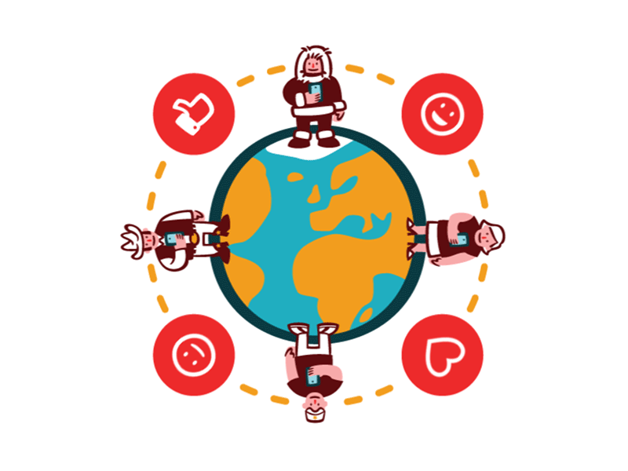
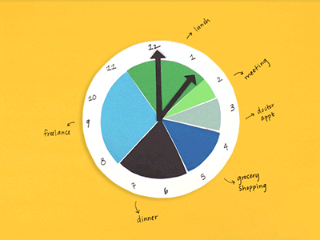

Chapters of My life: A Personal Odyssey
Greetings to all~
Hi, I am Nisya. I am a university student of UiTM Rembau. Currently,pursuing in Diploma of Information Management for the last semester.
I am a passionate student that desire to learn many valueable knowledge especially in management scope.


Here is the beginning of the story about myself.
Furthermore, my goals of life is aim to be a successful person not only at 'duniawi'(worldly life) but also 'ukhrawi'(afterlife). After I have learn through about my course of studies, I have realized that my job preferences is identically match with my current course which makes me become more confident in achieving my dream to become a professional in record field. In order to fully achieve it, I decided to continue pursue in my degree studies in record management course as my main stream after my diploma term has ended.
First of all, my full name is Nurainisya Binti Mohd Rozni, usually everyone prefer to call my nickname,Nisya and initial NS, as it was more easire to pronounce. I was born in Hospital Putrajaya in the year of 2004 on September 20th. I live together with my four family members including myself in Puchong,Selangor.
Next, the story of my educational background as being a student from an elementary school until now as a university student. For my elementary, I have studied at both Sekolah Kebangsaan Puchong Utama 1and Kafa Integrasi Al-Iman. During my high school, I have been schooled at Sekolah Menengah Kebangsaan Puchong Utama 1 in Arab and Account streams. As for this moment, I currently pursue my study at UiTM Rembau taking Diploma in Information Management
PSM,KPPIM and already in my last semestar.
Moreover, in terms of my strength as a university student I have acquire the necessity of skills, for example, I can quick to adapt with unfamiliar environment and also willingly to learn everything in order to improve myself more better in the future.
*EDUCATION BACKGROUND*
| YEAR | SCHOOL/UNIVERSITY | CATEGORIES | LINKS |
|---|---|---|---|
| 2011-2016 | Sekolah Kebangsaan Puchong Utama 1 | Primary School | |
| 2011-2016 | KAFA Integrasi Al-Iman | Religious Primary School | |
| 2017-2021 | Sekolah Menengah Kebangsaan Puchong Utama 1 | High School | |
| 2022-2025 | Universiti Teknologi Mara(UiTM), Rembau | University |
*FAVOURITE QUOTES*
- "Life isn't about finding yourself. Life is about creating yourself."
- "Be yourself;everyone else is already taken."-Oscar
- "Always be happy"
*MY SKILLS*
Table 2: List of Skills SKILLS EXPLANATION PICTURES Strong Communication I am continue to develop into becoming a better version of myself, especially toward my soft communication skills in order to increase my confidence.  Time-Management I am confidence on my full ability in managing the time schedules throughout my daily routine. Since, I have been practicing this skills from on early age to always manage the time efficiently.  Problem-Solving It is essential whenever working as individually or as a group since all the process will have its own problem to be solved. By gaining this skill, I can contribute more on how to find a solution for the problem I faced.
*EXCITING EXPERIENCE*
- Went to do Umrah worship at Mekah Al Mukarramah.
- Spent holiday with beloved family at Pulau Perhentian, Terengganu.
- Get a moment as an intern student at The Federal Court of Malaysia, Putrajaya.
- Celebrating my 20th birthday.
- Having a blissful moment with dearest peoples.
@copyright NISY2024
Date of Creation: 22nd November 2024
Latest Update: 5th Disember 2024If you have any problem, please Mail Me